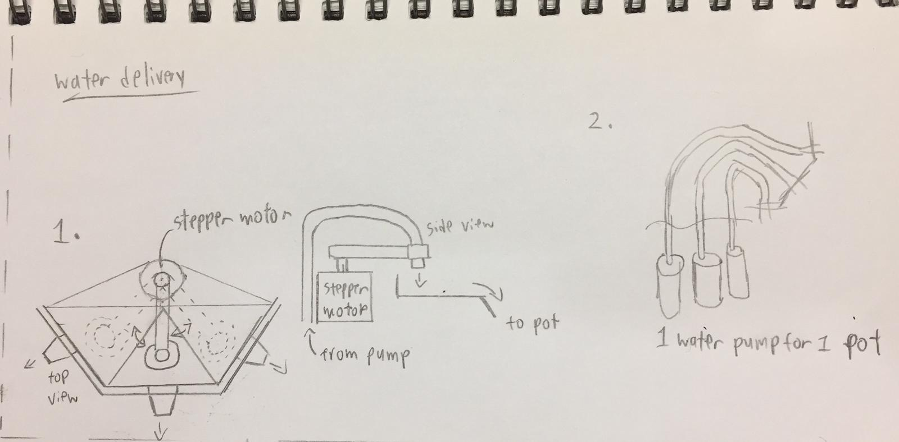

Project idea
Recently National Parks Board distributed free seed packets to households, however most are so busy with work they end up forgetting to take care of the plants, mainly forgetting to water them. (At least that is a problem my parents face when attempting to grow vegetative plants).
With that I was thinking how it would be nice to have some machine that could automatically water the plants for you, so all you need to do is to remember to refill the water container.
Design brief
Project title: Automatic potted plant watering system
Function: Dispenses water into potted plant when soil is dry.
I created a Gantt chart to help manage and track the progress of my project. Given 4 weeks with 8 hours per week here is the rough plan I came up with:

Research
I did some research on existing projects and took their designs into considerations to implement them into my design.
- Arduino Automatic Watering System from Instructables

-This project from Instructables shares a very similar design of a self watering system. It uses an arduino to detect moisture levels in soil using a soil hygrometer and turns on a DC motor pump to dispense water when low moisture is detected.
- Self-Watering Plant from Instructables

This design uses long bolts as water sensors and a relay to control a nom-submersible pump, controlled by an Arduino as well.
- CNC Arduino Plant Growing Machine from Instructables

This project is more complex and uses an addition of stepper motors to water multiple plant containers, it also has grow lights built into it to help cultivate the plants faster.
- Double Plant Watering
This project uses an Arduino to control 2 water pumps to turn on for 2 seconds per day. When not active it goes into "sleep mode", conserving power.

With that here are some ideas I would want to implement into my design:
Design specifications:
- Detects dry soil in plant pot and dispenses water automatically until moist.
- Waters multiple plant pots (at most 3).
- Compact and not take up too much space to be able to be kept indoors
Design Sketches
The idea is to have hygrometers probed into the soil in the flower pots, which is connected to an Arduino. When it detects low moisture, it turns on a DC motor pump which dispenses water into the pot until it detects a certain level of moisture.
Initially I wanted to have the water reservoir inside the compartment with the electronics below it, but in the end I went with using a 500ml pet bottle placed outside to hold the water.
The height of the hexagonal-shaped tower housing the electronics will be designed to be less or equal to the height of a 500ml pet bottle (approx 20cm). For the base size, I will need to consider the base area of 3 flower pots, the pet bottle and the electronics housing.
I also came up with 2 methods of delivering water to multiple pots:
Have a stepper motor control a tube connected to the motor pump, where it will rotate to a specific angle to dispense water into a tray with multiple compartments leading to the plant pots.
Pros and cons:
+Only 1 motor pump and 1 stepper motor needed: compact.
-Might be a challenge to program the stepper motor to direct water into the potsEach potted plant has their own motor pump, so 3 plant pots will require 3 motor pumps.
Pros and cons:
+Easy to program.
-Multiple motors required: more parts needed and will be bulky.
As compactness is more favorable, I decided to work on method 1: using stepper motors.